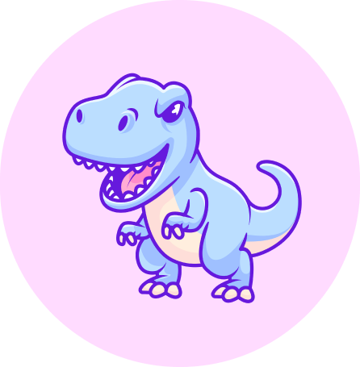

Кажется у тебя сегодня др?
Надеюсь, ты будешь удивлена такому “подарку” :)
Надеюсь, ты будешь удивлена такому “подарку” :)
Ну что ж, начнём
Сегодня тебе уже twenty one...
Но в душе ты всё ещё kid
Сегодня тебе уже twenty one...
Но в душе ты всё ещё kid
Оставайся такой же загадочной,
но не перебарщивай, а то хрен тебя
поймешь иногда...
но не перебарщивай, а то хрен тебя
поймешь иногда...
Не забывай дарить людям свою
невероятную улыбку(не такую
невероятную, как ты сама, но все же)
невероятную улыбку(не такую
невероятную, как ты сама, но все же)
А теперь просто мой бубнёж
Кать, с Днём родения!!!
В первую очередь чего я тебя желаю это здоровья, тебе, маме, Вэйсу, конечно же, и всем кого ты любишь.
Определиться чем ты правда хочешь заниматься в этой жизни и осуществить свою главную мечту,
но для этого ни в коем случае не сдавайся и слушай только себя.
Отдельное спасибо я хочу тебе сказать за то, какой я сейчас, за то что воспитывала меня и помогала становиться лучше не смотря на то, сколько нервов и сил ты потратила. Ты и сама, наверное знаешь, что я готов тебе помочь с чем-угодно, поэтому ты знаешь к кому обращаться)
*Оказывается очень сложно писать что-то действительно искренне, особенно тебе*
И последнее, что я напишу в своём трогательном письме это то, что не было у меня людей более значимых и
так сильно повлиявщих на мою жизнь. Это даже не любовь как к девушке, другу, ещё кому-то, это просто любовь.
(нет, это не ванильные словечки, а просто делюсь тем, что осознал за последние месяцы) Пожалуй, закончим с дистанционной искренностью. Дальше будет моя любимая фотка за всю мою жизнь, так что листай
Кать, с Днём родения!!!
В первую очередь чего я тебя желаю это здоровья, тебе, маме, Вэйсу, конечно же, и всем кого ты любишь.
Определиться чем ты правда хочешь заниматься в этой жизни и осуществить свою главную мечту,
но для этого ни в коем случае не сдавайся и слушай только себя.
Отдельное спасибо я хочу тебе сказать за то, какой я сейчас, за то что воспитывала меня и помогала становиться лучше не смотря на то, сколько нервов и сил ты потратила. Ты и сама, наверное знаешь, что я готов тебе помочь с чем-угодно, поэтому ты знаешь к кому обращаться)
*Оказывается очень сложно писать что-то действительно искренне, особенно тебе*
И последнее, что я напишу в своём трогательном письме это то, что не было у меня людей более значимых и
так сильно повлиявщих на мою жизнь. Это даже не любовь как к девушке, другу, ещё кому-то, это просто любовь.
(нет, это не ванильные словечки, а просто делюсь тем, что осознал за последние месяцы) Пожалуй, закончим с дистанционной искренностью. Дальше будет моя любимая фотка за всю мою жизнь, так что листай

не скучай.